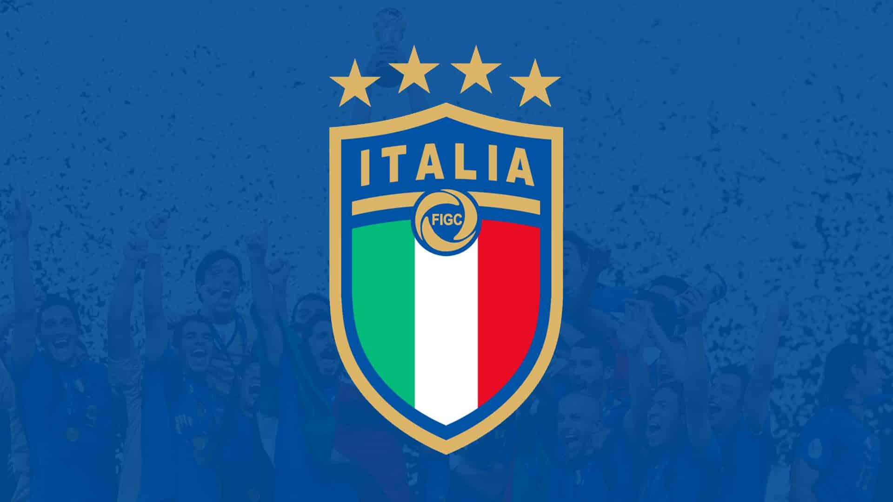
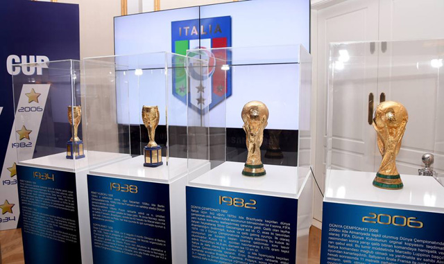
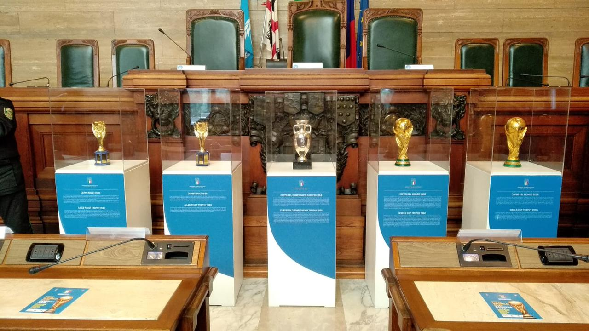
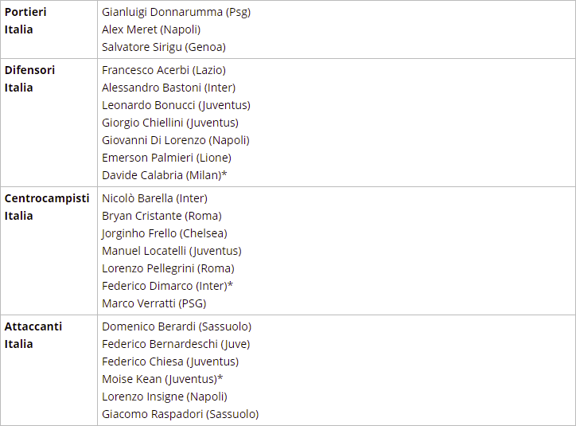

Nazionale Italiana

La storia della nazionale Italiana
Si estende ben oltre un secolo, la storia del nostro calcio ed è caratterizzata da un lungo elenco di trofei sia a livello di squadre di club sia livello di nazionale, ma anche da alcuni eventi negativi e gravi scandali che ne hanno minato in profondo la credibilità. Le squadre di calcio italiane, compresa la Nazionale, e il loro tipo di gioco. In realtà non importa quanto sia grande o piccola la vostra conoscenza di calcio è, probabilmente, una cosa che già avrete sentito prima, negli anni: il calcio italiano è uno dei più tattici e difensivi nel Mondo. Non è sicuramente un tipo di gioco che ogni tifoso ama vedere e che ogni giocatore si inorgoglisce a mettere in pratica, ma la sua bellezza deriva dalla perfetta organizzazione e dagli ottimi risultati che quasi sempre arrivano. Schematizzerò, ora, brevemente la storia del calcio in Italia. I primi anni La maggior parte delle persone considerano l'anno 1898 il punto di partenza della storia del calcio italiano, in quanto questo è il momento in cui sono state giocate le prime partite ufficiali, anche se non c'era un campionato unico in tutto il paese, poichè le squadre avrebbero prima dato battaglia in tornei regionali a livello semi-professionista. Nel 1929 però, è stato formato un campionato maggiore, che ha raccolto le migliori squadre regionali, facendole incontrare testa a testa in quello che sarebbe presto diventato il campionato di Serie A, governato dalla Federazione Italiana Giuoco Calcio. Fu in questo periodo che il titolo di campione della Serie A ricevette l’appellativo di "Scudetto" e contrassegnerà gli attuali campionati con la piccola immagine di uno scudo con la bandiera italiana sulle maglie della squadra arrivata prima in classifica.
I palmares della nazionale italiana
L'Italia ha anche conquistato gli Europei in due occasioni, precisamente nel 1968 e più recentemente nel 2021. Insieme a tali riconoscimenti ufficiali si registrano anche le due Coppe Internazionali, competizione del passato che metteva di fronte la Nazionale azzurra le compagini dell'Europa orientale. La Nazionale azzurra ha anche conquistato l'Oro olimpico, prima che la competizione venisse destinata agli Under 21. 4 mondiali (1934, 1938, 1982, 2006) 2 Europei (1968, 2020 * disputato nel 2021) 2 Coppe Internazionali ('27-'30, 33-'35) Olimpiadi (1936)


Lo stadio della nazionale italiana

Ecco di seguito l'elenco completo dei convocati di Roberto Mancini per le partite dell'Italia nel mese di ottobre di Nations League. Nella lista definitiva figurano 20 giocatori che hanno preso parte agli scorsi Europei. Out, dunque, ancora una volta Nicolò Zaniolo mentre torna Moise Kean in sostituzione dell'infortunato Immobile. Ecco la lista completa dei convocati dell'Italia per le sfide del mese di ottobre.
La formazione della nazionale italiana
